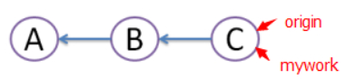
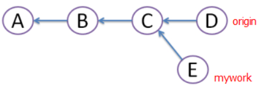
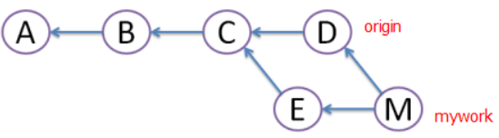
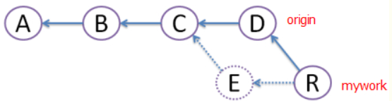
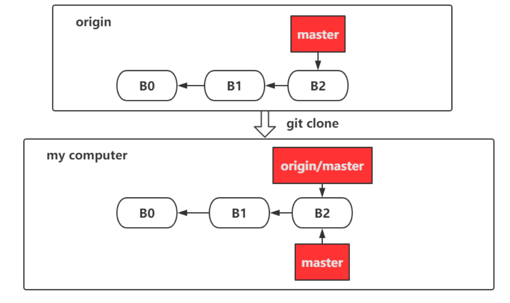
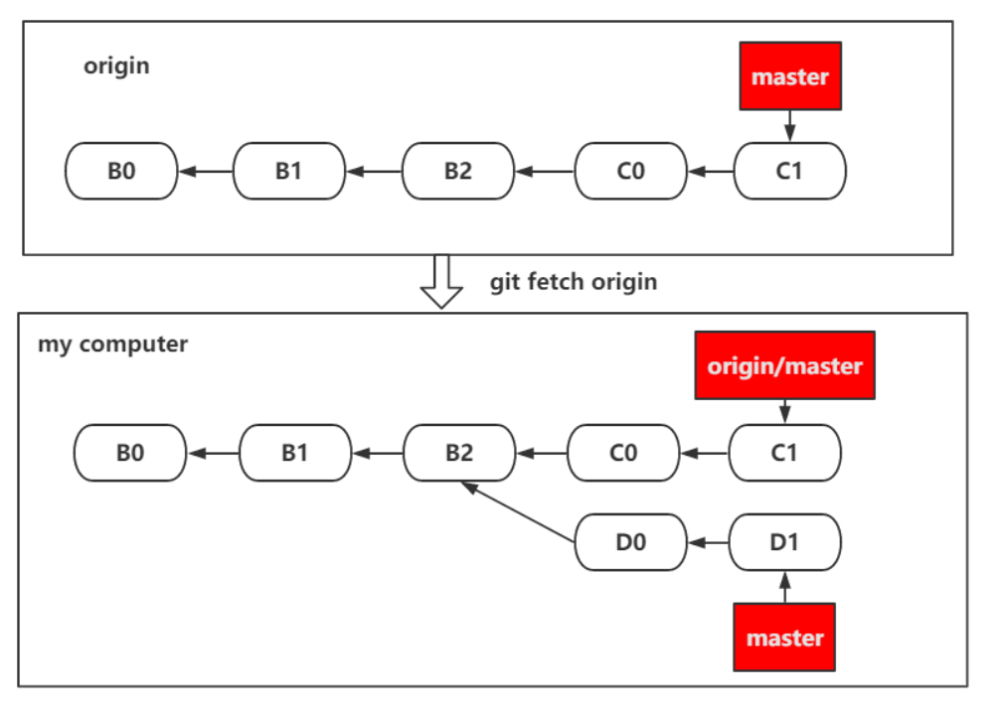

gitcmd1
python setup.py sdist bdist_wheel
pip install --upgrade twine
twine upload --repository-url https://upload.pypi.org/legacy/ dist/*
python setup.py build
python setup.py sdist
在线安装github包
pip install git+git://github.com/.git
1 | channels: |
ext_modules 参数用来构建C和C++扩展包，它是Extension实例的列表。每个Extension实例描述了一个独立的扩展模块，扩展模型可以设置扩展包名，头文件，源文件，链接库及其路径，宏定义和编译参数等。
1 | ext_modules=[ Extension('', glob, libraries, include_dirs) ] |
打包静态文件
1 | data_files=[ ('安装时文件的存储路径（相对于sys.prefix）', ['文件目前的存储路径（相对于setup.py）']) ] |
希望被打包的文件：package_data
不希望被打包的文件：exclude_package_data
include_package_data=True：启用清单文件MANhIFEST.in
MANIFEST.in：include recursive-include prune
MANIFEST.in放在setup.py同级目录
自动生成脚本，安装后生成/usr/bin/foo的可执行文件，文件入口指向foo/main.py的main函数
1 | entry_points={'console_scripts' : ['foo = foo.main:main']} |
执行python setup.py install后会生成/usr/bin/foo.sh并添加权限
install_requires：当前模块依赖的包
setup_requires：setup.py依赖的包
tests_require：测试时依赖的包
dependency_links：下载依赖包的链接
extras_require：深度使用模块时依赖的包，需要手动安装
python_requires：安装环境的限制
1 | from setuptools import setup, find_packages |
源码包：跨平台，先解压，再编译，最后安装，每次安装都要进行编译，安装速度较慢（zip，tar）。
二进制包：安装过程省去了编译的时间，直接进行解压安装，不同平台编译出来的包无法通用（egg，wheel）。
第一次使用git push -u origin master，以后可以直接用git push代替git push origin master
如果只是简单地从工作目录中手工删除文件，运行git status时就会出现Changes not staged for commit的提示
git rm <file>将文件从暂存区和工作区中删除，强制删除-f
将文件在暂存区中移除，但在工作区中保留 git rm --cached
将目录作为参数，删除其中的子目录和文件git rm -r
git push <远程主机名> <本地分支名>:<远程分支名>
将本地分支上传到远程并合并，如果本地版本和远程版本有差异，但又要强制推送可以使用--force参数
从远程获取代码并合并本地版本 git pull <远程主机名> <远程分支名>:<本地分支名>
git remote -v
git remote rm name删除远程仓库
git remote rename old_name new_name修改仓库名
添加远程版本库
git remote add [shortname] [url]
git remote show name
git help 子命令
git commit -a 不需要执行git add命令，直接提交
git mv [file] [newfile]重命名
git diff显示工作区与暂存区之间的差异
git diff --staged 显示暂存区与本地仓库之间的差异
git diff HEAD显示工作区(已track但未add)和暂存区(已add但未commit)与本地仓库之间的差异
git diff HEAD~x git diff HEAD^^^ 查看版本之间的差异
git diff <分支名1> <分支名2> 比较两个分支最后commit内容的差异，--stat显示所有有差异的文件
git pull = git fetch + git merge
git pull --rebase = git fetch + git rebase
假设有三次提交A，B，C


git merge

git rebase

直接将E提交废除
有时会conflict，解决冲突后，git add（不执行git commit）+ git rebase —continue
任何时候，都可以用git rebase —abort来终止rebase，分支会回到rebase前的状态

